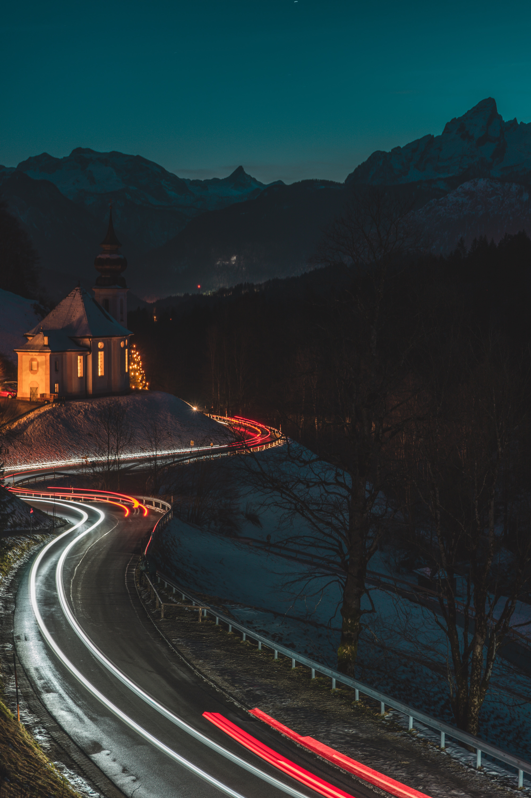
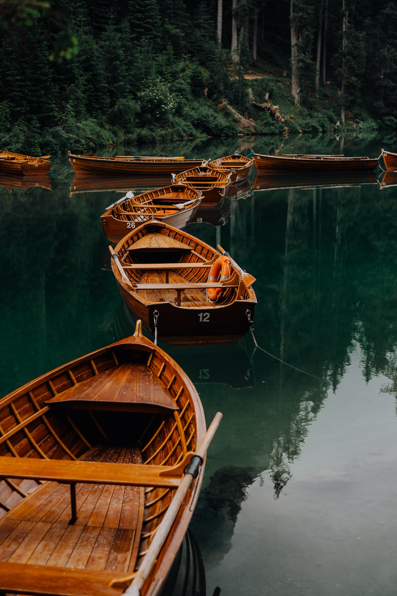

My University Experience
October 3,2020 by Khalid Williams
Hi my name is Khalid Williams. I am a student at the University of the West Indies.
I am 21 years old and I am currently pursuing a major in Computer Science along with a minor
in Management Studies. I had taken a gap year before I started UWI so I am currently in my
second year here as opposed to most of my friends who are in Third year. Initially when I
just started university I was very angry at myself for taking that gap year as it wasn't
necessarily needed. I felt like I had wasted so much time when I could've spent it doing
something better, like learning a skill or doing something that'll untimately benefit me in
the long run. I spent the first two weeks or so feeling regretful because of that.

However, as time went on I started being more social and those feelings of regret started to
disappear because I started meeting, developing connections and gotten to know so many
awesome and amazing people. They truly make my time at UWI amazing. Another thing that has
made my time at UWI fun is being able to play basketball. I love playing basketball and I
didn't really get to play it that much duting my gap year since there isn't a court near
where I live. In addition UWI has an indoor court which makes playing basketball much more
fun. Practice was rough at first since I was a little bit out of shape and the players there
are insanely athletic but I stuck through and kept training and made the team. I bonded with
my teammates and whenever we have a match to play or whenever we have practice it's always a
nice vibe.
How are You?
October 1,2020 by Khalid Williams
If I had to describe how I am right now I would say the current theme of my life is growth.
I have been heavily focused on that these past few weeks. I feel like
I should be and can be doing much more. this relates to all aspects of my life. I feel like I
am not doing enough and I need to change. I always chastize myself about things and sometimes
I don't even endo of fixing It, I just end up in a cycle where I continually critsize myself
about things. Sometimes I even end up making excuses as to why i'm not "growing"
(as in why I am not changing for the better).

These past few weeks I have done alot of quiet introspectation and I have been trying my best
to stay focused and to grow as much as I can as an individual and accomplish any goal that I
would like. School initially started off very rough for me and up until this point I am still
trying to catch up, as a matter of fact the problems I experienced which caused me to fall
behind in school are still present but I choose to ignore them and not make them be a reason
as to why I don't do well. Becoming a star basketball player for UWI is something that I yearn
for, so i've made the decision to not be lazy and put in the work to reach that level.
Another goal of mine is to be happy (well I mean, who wants to be sad?). I try to stay aware
of my feelings and point out any problems that I have. Anything that doesnt make me happy I
try to find a solution for it. If several people are making me unhappy I block or mute them.
If I am in an environment where I am constantly feeling drained I try and remove myself from
that environment. Lastly, I've learned to take a break and look at my accomplishments and
what i've done every now and then and acknowledge them. How about you, what are the current
themes in your life right now?